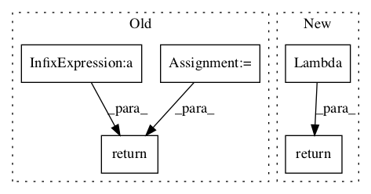

9c51193d4203f796c2adeca69b29a4ea168d7ceb,deepchem/models/tensorgraph/models/gan.py,GAN,create_discriminator_loss,#GAN#Any#Any#,313

Before Change
A Layer object that outputs the loss function to use for optimizing the
discriminator.
training_data_loss = layers.Log(discrim_output_train + 1e-10)
gen_data_loss = layers.Log(1 - discrim_output_gen + 1e-10)
return -layers.ReduceMean(training_data_loss + gen_data_loss)
def fit_gan(self,
batches,
generator_steps=1.0,
After Change
-------
A Tensor equal to the loss function to use for optimizing the discriminator.
return Lambda(lambda x: -tf.reduce_mean(tf.log(x[0]+1e-10) + tf.log(1-x[1]+1e-10)))([discrim_output_train, discrim_output_gen])
def fit_gan(self,
batches,
generator_steps=1.0,
In pattern: SUPERPATTERN
Frequency: 3
Non-data size: 5
Instances
Project Name: deepchem/deepchem
Commit Name: 9c51193d4203f796c2adeca69b29a4ea168d7ceb
Time:
Author: null
File Name: deepchem/models/tensorgraph/models/gan.py
Class Name: GAN
Method Name: create_discriminator_loss
Project Name: deepchem/deepchem
Commit Name: 9c51193d4203f796c2adeca69b29a4ea168d7ceb
Time:
Author: null
File Name: deepchem/models/tensorgraph/models/gan.py
Class Name: GAN
Method Name: create_generator_loss
Project Name: deepchem/deepchem
Commit Name: 9c51193d4203f796c2adeca69b29a4ea168d7ceb
Time:
Author: null
File Name: deepchem/models/tensorgraph/models/gan.py
Class Name: WGAN
Method Name: create_discriminator_loss